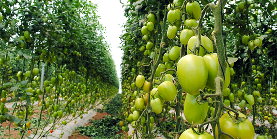
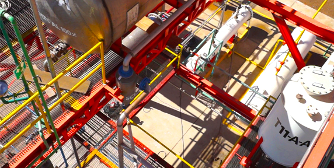
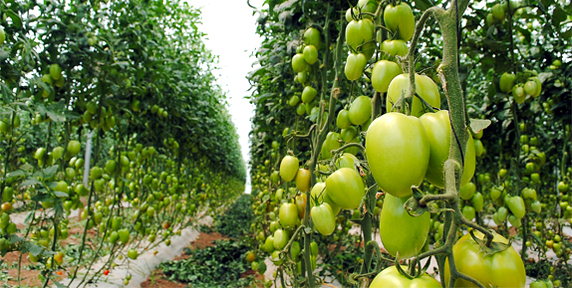
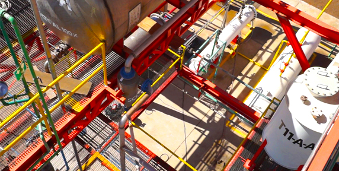

nosotros
- / newbauer
- / misión
- / visión
- / filosofía
En NEWBAUER, contamos con altos estándares de calidad.
Este compromiso se lleva a cabo en la investigación y mejoramiento continuo de cada proceso.
Ser una empresa quimica dedicada a la fabricación de nutrición en base a fertilizantes líquidos y biotecnológicos en busca de constante innovación con el propósito de optimizar nuestro entorno agrícola.
Situarnos en 5 años como la empresa líder en producción de fertilizantes líquidos y dentro de las 5 comercializadoras mas importantes en México.
Como filosofía empresarial hemos arraigado la innovación tecnológica continua como una actitud estratégica en la organización.
Contamos con un grupo Químico-Agronómico de manera permanente con el objetivo de investigar mejoras en los productos actuales así como en desarrollar nuevos productos.
 


